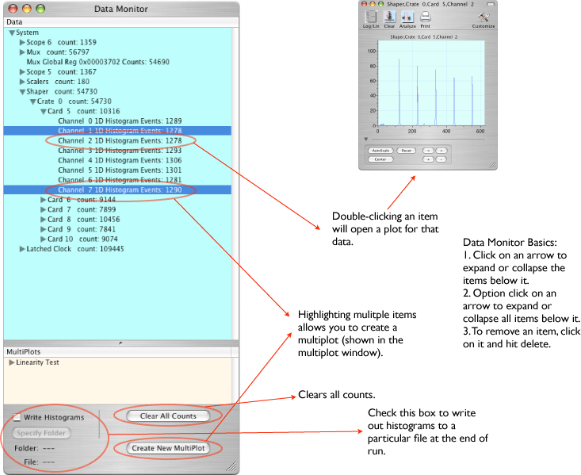

Configuration icon for Data Monitor:  Not shown in this icon view are the two output connectors. The connector on the bottom right is a data pass thru--all data record will go on to the next object in the connection chain. The connector on the upper right will put out end-of-run histograms only. No other records will be sent out from that connector.
Not shown in this icon view are the two output connectors. The connector on the bottom right is a data pass thru--all data record will go on to the next object in the connection chain. The connector on the upper right will put out end-of-run histograms only. No other records will be sent out from that connector.
The Data Monitor object displays the number of events collected by each object being readout in the Data Task List. By double clicking on certain individual channels (eg., shapers, scopes) a histogram or waveform plot are shown. Clicking on groups of channels (e.g. shaper cards, whole scopes) multiple plots are shown.
